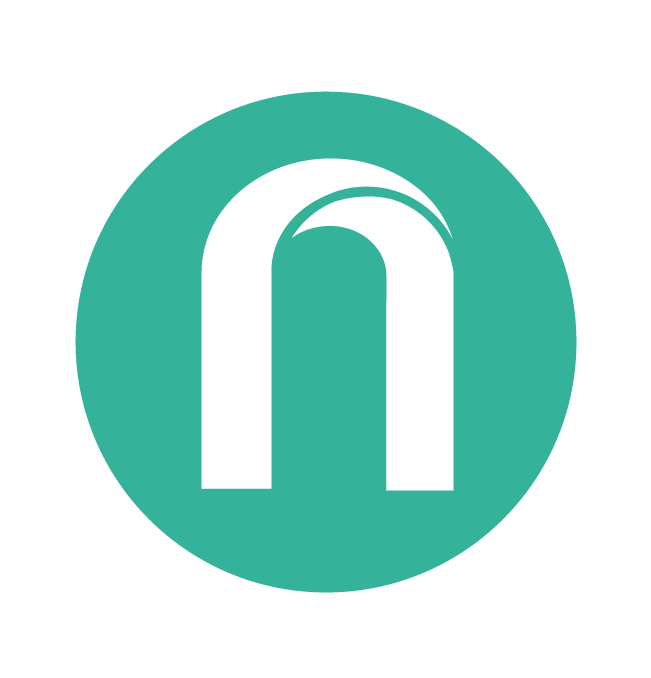

The "Exploring Identity" module at university required me to develop a personal brand consisting of a monogram, wordmark and a visual marque.
The most important aspect in this project was me - Who I am? As always, I started on paper and was presented with the challenge of using the initials R and N. I came up with a design after much sketching and also a clean, simple wordmark to accompany it. The visual marque is that of a lion with a pen tool mane. The lion portrays traits such as leadership, pride and strength and these are qualities that I strive to use as a designer. The pen tool indicates my love of illustration and design.
The monogram gives a clean, modern looking brand that can be used in various ways. If need be, the wordmark and visual marque can be included.
